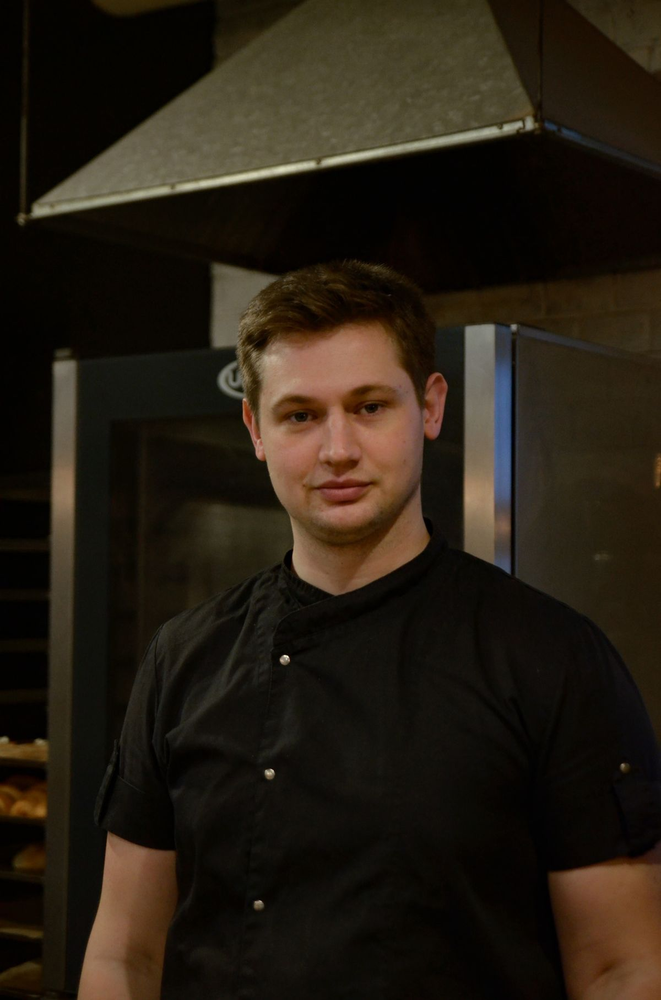
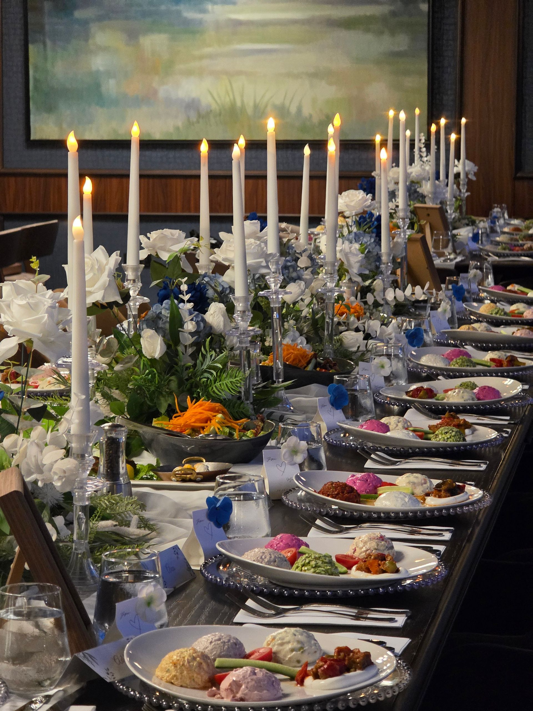

At Aurelian, every dish begins with the land. We work directly with local farmers, foragers, and fishermen within a 100-mile radius. Our kitchen transforms these ingredients through technique rooted in European tradition and refined with modern precision. The result is a menu that changes with the seasons — honest, beautiful, and deeply flavorful.
— Chef Marcus Aldridge
A fictional restaurant concept. Sourcing, credentials and recognition are illustrative.
A season, in seven movements
Autumn Tasting Menu
October 2026
Archived seasonal concept · Sample menu and pricing, not current availability
Amuse-Bouche
Potato Velouté, Truffle Foam, Chive Oil
First Course
Hokkaido Scallop, Cauliflower Purée, Golden Raisin, Brown Butter
Illustrative food-only pricing; tax, service and availability unconfirmed. Wine service is for guests aged 21+. Please discuss allergies before dining.
Illustrative stock photography · Select an image to explore

Illustrative portrait · Not an actual Marcus Aldridge photograph
The hand behind the plate
Chef Marcus Aldridge
EXECUTIVE CHEF & CO-FOUNDER
With two decades of experience across Michelin-starred kitchens in Paris, Copenhagen, and New York, Marcus brings a philosophy of restraint and reverence to every plate. His approach: source the finest ingredients, apply precise technique, and let the product shine.
Ex-NomaEx-Le BernardinJames Beard Nominee 2024
“The best dishes are the simplest — when you start with perfect ingredients, your job is not to interfere.”
Fictional biography and credentials from the design concept.
A dialogue between glass and plate
The Cellar
350+ Labels · Old World Focus · Natural & Biodynamic
By the Glass
12 rotating pours, changed weekly to complement the current menu
Starting at $16
Sommelier's Selection
Let our team curate a pairing journey through the tasting menu
$95 per person
Private Cellar
Explore our reserve list with rare verticals and library wines
By request
Illustrative collection, prices and bottle artwork. No current stock, producer affiliation or sale.

For occasions that stay with you
Private Dining
Host your most memorable occasions in our private dining room, seating up to 24 guests. Custom menus crafted for your event with dedicated service.